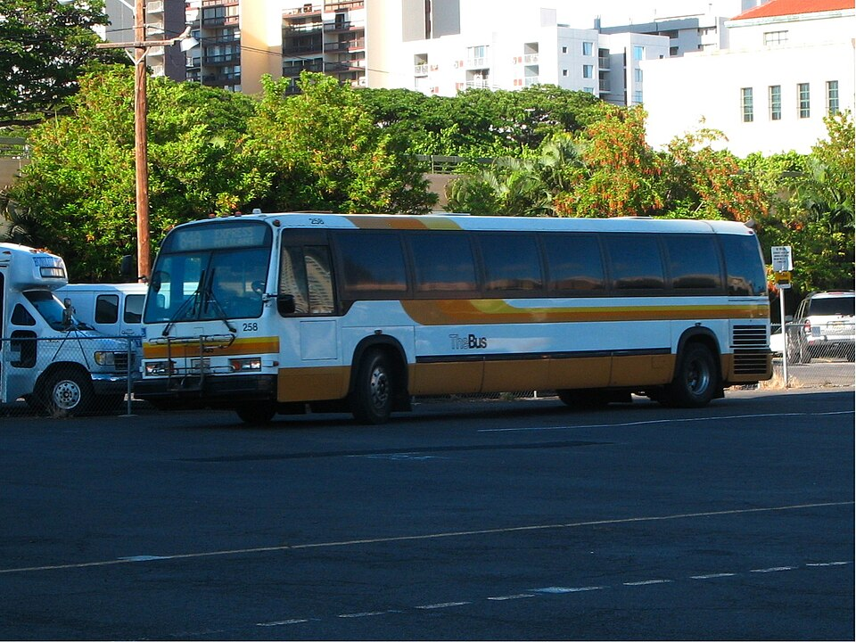

Alapaʻi Street
Place: Alapaʻi Street, Honolulu, Oʻahu
Type: Historic street / royal namesake
Story it tells: A downtown Honolulu street honoring High Chiefess Julia Alapaʻi, whose lineage, political leadership, and inherited lands became part of the foundation supporting Queen's Hospital.

Alapaʻi Street is one of downtown Honolulu's oldest planned streets, running from South King Street toward Punchbowl. Today it is known for the Alapaʻi Transit Center, government offices, and nearby public safety facilities, but its name honors High Chiefess Julia Alapaʻi (1814–1849), one of the Hawaiian Kingdom's influential aliʻi women during the reign of Kamehameha III.
Julia Alapaʻi descended from one of Hawaiʻi Island's most important chiefly families. She was the granddaughter of Alapaʻinui, the powerful eighteenth-century ruler whose military campaigns united much of Hawaiʻi Island and whose court later raised the young Kamehameha after an early prophecy threatened his life. Julia served Princess Nāhiʻenaʻena and the sacred chiefess Keōpūolani before joining the royal household of Kamehameha III and Queen Kalama.
Like many high-ranking aliʻi women of her era, Julia Alapaʻi exercised real political authority. She served in both the House of Nobles and the Privy Council while her husband, Keoni Ana (John Young II), served as Kuhina Nui, or Premier of the Hawaiian Kingdom. Together they stood near the center of the kingdom's political leadership during a period of constitutional reform and modernization.
Julia's influence extended beyond government. Through Land Commission Award she inherited the large ʻili (land subdivision, ranking directly below an ahupua'a in size) of Kaliu, encompassing the eastern edge of Honolulu's growing downtown plain. Following her unexpected death in 1849, Kamehameha III and the Privy Council laid out Honolulu's expanding street grid and named Alapaʻi Street in her honor just one year later. The roadway crossed lands once belonging to her family, making the name both a memorial and a reflection of the landscape itself.
The Alapaʻi family's legacy continued long after Julia's death. Without children, her lands passed to Queen Emma and became part of the royal estate supporting Queen's Hospital, today known as The Queen's Medical Center. In this way, the street's namesake remains connected not only to the Hawaiian Kingdom but also to one of Hawaiʻi's most enduring public institutions.
Today Alapaʻi Street serves thousands each day. The former bus depot evolved into the Alapaʻi Transit Center, one of Honolulu's busiest transfer hubs, while nearby stand the Frank F. Fasi Municipal Building, Honolulu Police Department headquarters, the Joint Traffic Management Center, and other civic institutions. Few travelers realize that the street they pass along each day honors a chiefess whose lineage, leadership, and lands helped shape both the Hawaiian Kingdom and modern Honolulu.